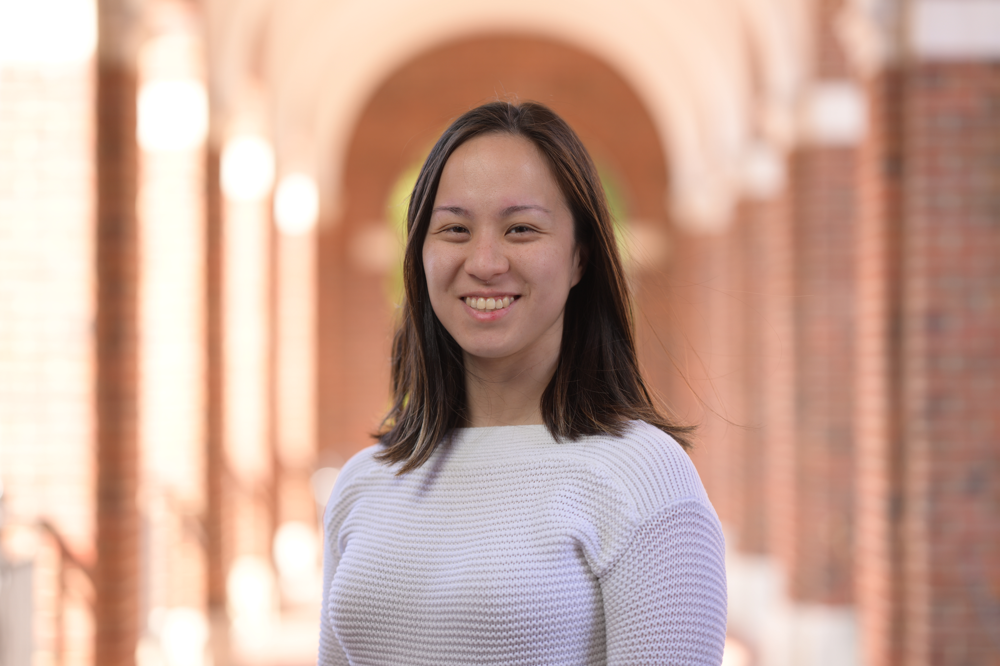
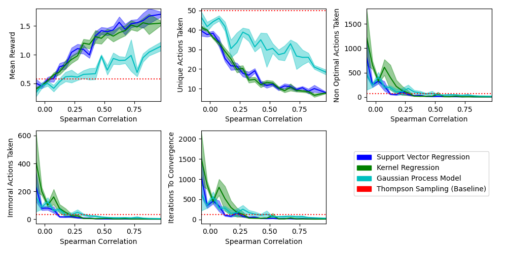
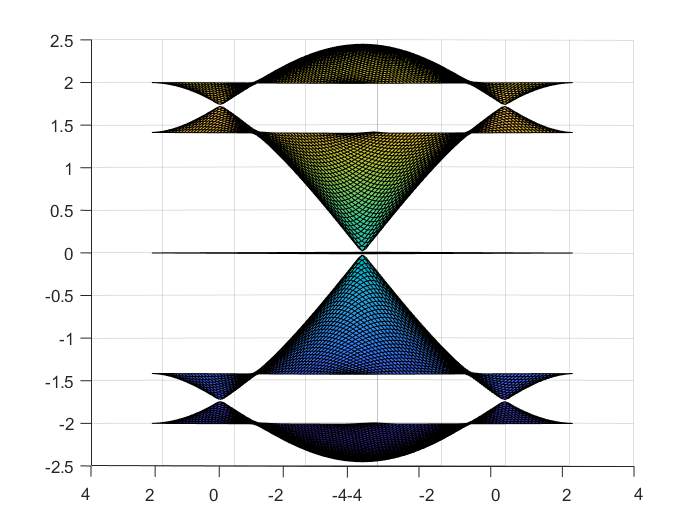

|
Andrea Wynn
I am a second-year PhD student in Computer Science at the Johns Hopkins University Whiting School of Engineering. I am advised by Dr. Eric Nalisnick and Dr. Anqi Liu, and I work closely with Dr. Gillian Hadfield. My research interests span AI safety and robustness, AI alignment, and human-AI collaboration. My work brings together ideas from machine learning and cognitive science to create more reliable, trustworthy, and human-centered AI systems.
Before that, I was a MSE student and teaching assistant in the Computer Science department at Princeton University, working with Dr. Tom Griffiths in the Princeton Computational Cognitive Science Lab.
And before that, I received a B.S. with a double major in Computer Science and Mathematics from Rose-Hulman Institute of Technology in May 2022.
I worked with Expedia Group in summer 2023 as a Machine Learning Science Intern, and have completed software engineering internships at Amazon Web Services, Kratos Defense & Security Solutions, Collins Aerospace, and Circa.
Email /
CV /
LinkedIn /
Google Scholar /
Github /
OrcID
|

|
|

|
Learning Human-like Representations to Enable Learning Human Values
Andrea Wynn, Ilia Sucholutsky, Thomas L. Griffiths
Accepted to NeurIPS 2024.
In this work, we study a previously overlooked factor that influences a ML agent’s ability to learn human values (representational alignment), drawing on insights from cognitive science.
We demonstrate that aligning AI representations with humans can improve safety, sample efficiency, and generalization ability when learning a wide range of human values in personalization tasks.
This introduces a new avenue for pursuing scalable, robust, and personalizable alignment of AI agents with human values.
|
|

|
Spectral Touching Points in Two-Dimensional Materials
Andrea Wynn
SIURO, 2022
I find and prove the existence of Dirac conical points in multiple 2D materials under certain conditions on electric potential, a property which has been conjectured to be related to the unique properties of graphene. I additionally discovered and proved the existence of a new type of spectral touching point, which I named the mesa touching point.
|
|
Work Experience
LinkedIn Core AI Team, PhD Research Intern, May - August 2025.
Expedia Group Vacation Rental Dynamic Pricing Team, Machine Learning Science Intern, May - July 2023.
Amazon Web Services Pool Balancing & Demand Forecasting Team, Software Development Engineer Intern, June - August 2022.
Circa, Research Intern, November 2021 - May 2022.
Amazon Web Services Outposts Team, Software Development Engineer Intern, June - August 2021.
Impact Snacks, Software Engineering Intern, March - May 2021.
Kratos Defense & Security Solutions, Software Engineering Intern, June - August 2020.
Collins Aerospace, Software Engineering Intern, June - August 2019.
|
|
Leadership
Backpat Tutoring, Co-Founder & Volunteer Coordination Manager, May 2020 - May 2022.
Society of Asian Scientists & Engineers, Midwest Regional Coordinator, June 2022 - Present.
Society of Asian Scientists & Engineers, Midwest Regional Conference Chair, August 2021 - March 2022.
Society of Asian Scientists & Engineers, Rose-Hulman Chapter President, February 2020 - May 2022.
Society of Women Engineers, Rose-Hulman Chapter Secretary, March 2019 - March 2021.
Society of Asian Scientists & Engineers, Rose-Hulman Chapter Secretary, February 2019 - February 2020.
Society of Asian Scientists & Engineers, Rose-Hulman Chapter Outreach Chair, October 2018 - February 2019.
|
|
Teaching
COS126 Computer Science: An Interdisciplinary Approach, Princeton University, Fall 2022 - Spring 2024.
CSSE333 Database Systems, Rose-Hulman Institute of Technology, Spring Quarter 2021.
CSSE333 Database Systems, Rose-Hulman Institute of Technology, Winter Quarter 2020-21.
CSSE304 Programming Language Concepts, Rose-Hulman Institute of Technology, Fall Quarter 2020.
CSSE333 Database Systems, Rose-Hulman Institute of Technology, Spring Quarter 2020.
CSSE333 Database Systems, Rose-Hulman Institute of Technology, Winter Quarter 2019-20.
CSSE333 Database Systems, Rose-Hulman Institute of Technology, Fall Quarter 2019.
CSSE230 Data Structures & Algorithm Analysis, Rose-Hulman Institute of Technology, Fall Quarter 2019.
Lead Science Educator in Training, Seattle Pacific Science Center, Summers 2017-2018.
Volunteer English Teachers in China, Little Masters Club, Ankang, China, Summer 2017.
Science Educator in Training, Seattle Pacific Science Center, Summers 2014-2016.
|
|
Honors & Awards
Sigma Xi Scientific Honor Society Associate Membership, 2025-26.
Percy Pierre Doctoral Fellowship, 2024-26.
Louis M. Brown Engineering Fellowship, 2024-25.
Jun Wu and Yan Zhang Graduate Student Fellowship, 2024-25.
Herman A. Moench Distinguished Senior Commendation, Rose-Hulman Institute of Technology, May 2022.
Frank Young Outstanding Service Award, Rose-Hulman Institute of Technology, May 2022.
Summa Cum Laude Graduate, Rose-Hulman Institute of Technology, May 2022.
Center for Diversity Student Ambassador Award, Rose-Hulman Institute of Technology, May 2022.
Rose-Hulman Independent Research Project Grant Recipient, Rose-Hulman Institute of Technology, February 2022.
Society of Women Engineers Conference Scholarship (sponsored by BorgWarner), October 2021.
2021 Chevron Scholar & Scholarship Recipient, Society of Asian Scientists and Engineers, September 2021.
Henry Turner Eddy Award for Applied Mathematics, Rose-Hulman Institute of Technology, May 2021.
TechPointX SOS Tech Challenge First Place Winner, August 2020.
Student Leader of the Quarter, Rose-Hulman Institute of Technology, Spring 2020.
Diversity Connect Engineering Design Challenge First Place Winner, Rose-Hulman Institute of Technology, October 2018.
Rose-Hulman Dean's List, 12x (All Quarters Attending), August 2018 - May 2022.
|
|
{kind=link}